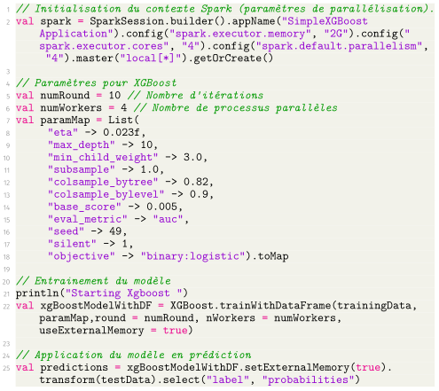

Dans un contexte de calcul distribué ou adapté au Big Data, nous avons vu que l'utilisation de Scala pouvait s'avérer intéressante. Il est cependant possible d'utiliser directement XGBoost via le langage Spark (et par là même l'intégrer dans un écosystème Hadoop).
En utilisant Spark, on peut ainsi gérer une parallélisation de calcul plus importante, qu'elle soit au sein d'une machine ou entre plusieurs machines.
Un exemple de code vous est fourni ci-dessous.

Ce code est parlant à plusieurs titres :
Paramètres
On retrouve dans cette application les principaux paramètres de XGBoost détaillés à cette page.Parallélisation
On peut remarquer la syntaxe pour utiliser la parallélisation tant avec XGBoost qu'avec Spark. En particulier, le nombre de workers pour XGBoost est identique au nombre d'unités de calcul parallèles spécifiées pour Spark.Syntaxe
On remarque encore une fois une fort rapprochement syntaxique par rapport aux autres langages courants comme Python, R ou bien Julia.
Si ce code peut sembler anodin, son « existence » montre l'impact de XGBoost et la volonté de pouvoir inclure cette méthode dans les frameworks de Big Data, signe de l'intérêt de cette méthode.